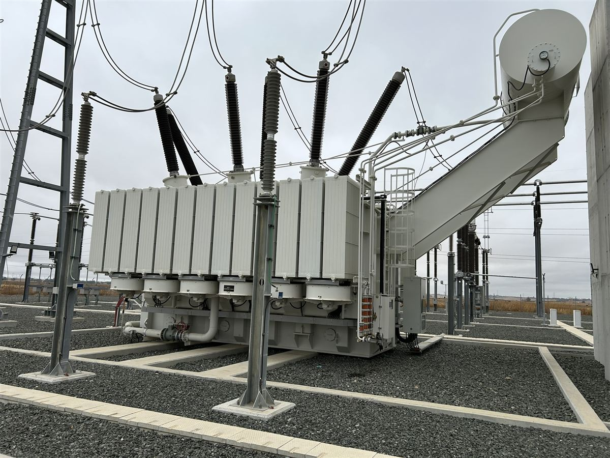
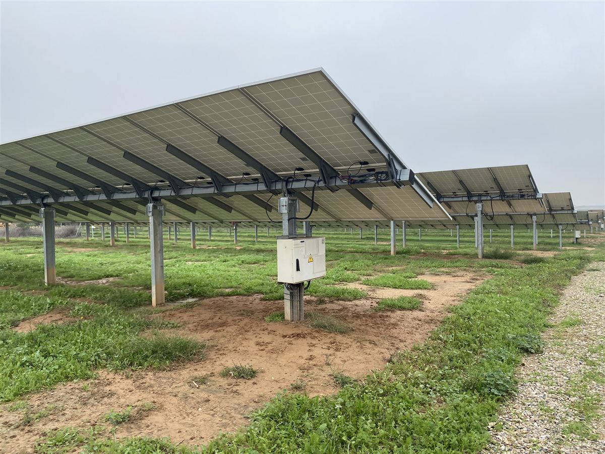
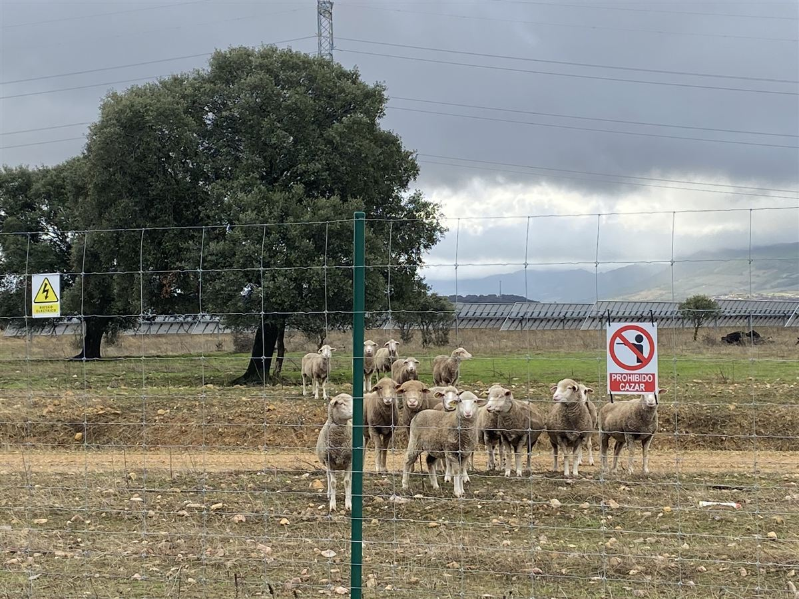
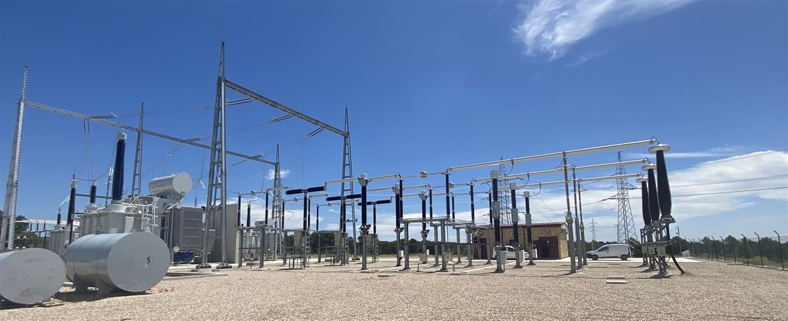
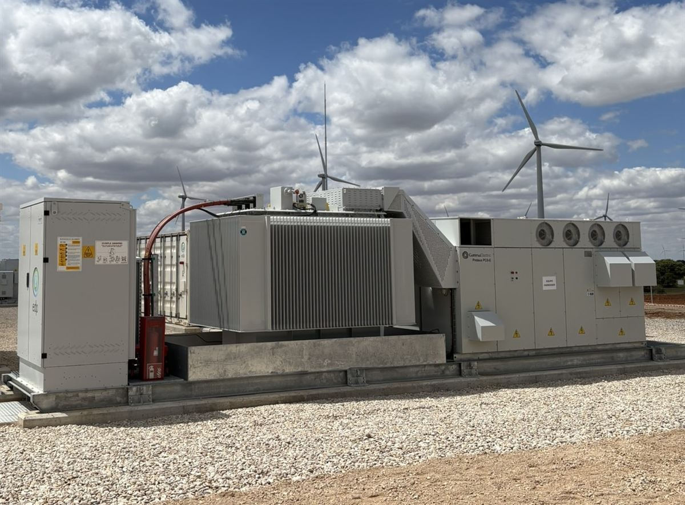

Servicios
En Capturam sabemos que ningún proyecto renovable avanza por una sola vía: es necesario coordinar red, terreno, ingeniería, medio ambiente y tramitación administrativa al mismo tiempo, sin perder de vista el calendario ni el riesgo. Por eso organizamos nuestro trabajo en servicios con un objetivo claro en cada uno: resolver los aspectos críticos del proyecto y aportar un resultado concreto al cliente. A continuación puedes ver el alcance y el resultado esperado de cada uno de ellos.

Estrategia de acceso y conexión
Alcance: Seguimiento de capacidad en redes de transporte (REE) y distribución (Endesa, i+DE); análisis del punto de conexión; preparación y tramitación de documentación de acceso y conexión; respuesta a requerimientos y seguimiento del expediente.
Resultado Una estrategia de conexión fundamentada y una documentación consistente.

Terrenos y viabilidad
Alcance: Identificación de emplazamientos; análisis previo ambiental, urbanístico y técnico; contacto con propietarios; apoyo en derechos de superficie; análisis de pendientes y capacidad de implantación.
Resultado Oportunidades filtradas antes de comprometer tiempo y capital.

Ingeniería de plantas e infraestructuras
Alcance: Estudios de implantación, incluido análisis de pendientes en instalación fija o a un eje y capacidad de implantación con PVCase; ingeniería de planta, accesos, obra civil e infraestructuras de evacuación; documentación para permisos y coordinación técnica.
Resultado Una solución técnicamente definida, tramitable y alineada con los condicionantes del proyecto.

Medio ambiente
Alcance: Coordinación o elaboración de estudios de impacto ambiental, estudios de avifauna y documentación sectorial; integración de condicionantes ambientales en el diseño.
Resultado Menos iteraciones y mayor coherencia entre ingeniería y evaluación ambiental.

Permitting, RtB y PES
Alcance: Planificación y seguimiento de autorizaciones tanto de competencia autonómica como ministerial; separatas y respuestas a organismos; alegaciones; coordinación de hitos hasta RtB y apoyo a la puesta en servicio.
Resultado Visibilidad del estado real del expediente y de los siguientes pasos necesarios para su avance.

Asesoramiento técnico-regulatorio
Alcance: Análisis de normativa aplicable, concursos de capacidad, régimen retributivo, alternativas de desarrollo y apoyo técnico a decisiones de inversión.
Resultado Decisiones fundamentadas en una lectura integrada de técnica, plazo y riesgo regulatorio.